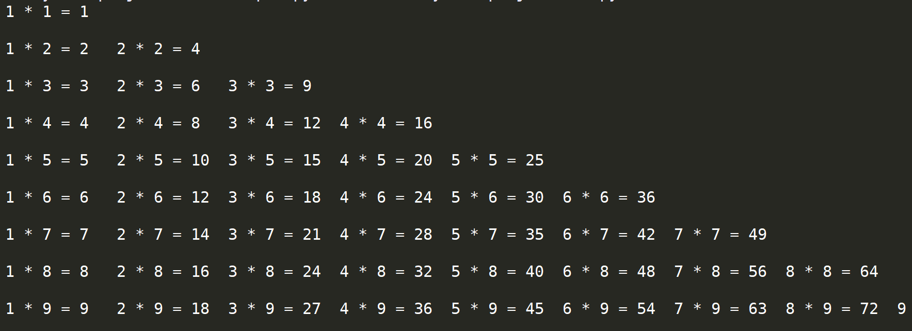

效果如下：

实现代码;
m = 1
n = 1
while(m<10):
while(n<=m):
print(n,"*",m,"=",m*n,end = '\t')
n += 1
print('\n')
n = 1
m += 1
解析：
这是一个很简单的while嵌套程序，首先分析九九乘法表是从上往下逐行增加，且第一列乘积为1的乘积（1和各数相乘）。
以外层层数判定该行有几个乘积。前面的显示不重要，按要求形式，把内层先打印即可。
需要关注的是，print语句自带换行效果，即print("hello world")其实是print("hello world", end = '\n')，所以在该程序中同行多次输出需要将print结束符换为其他的字符（任何字符都可以，空（不是空格）也可以）
之所以选择“\t”是因为输出时由于乘积有些是一位有些是两位，会打印出来不对齐，而“\t”意为制表符，类似table键功能，会自动对齐（相差位数不多时）